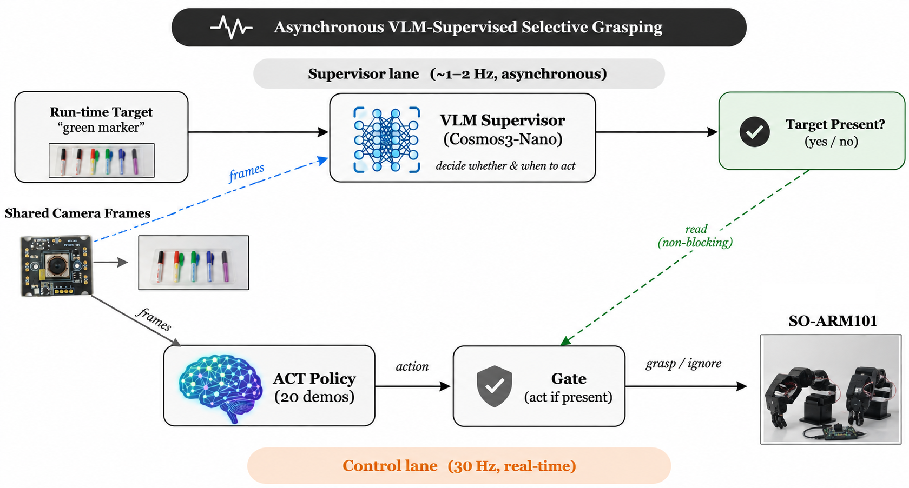
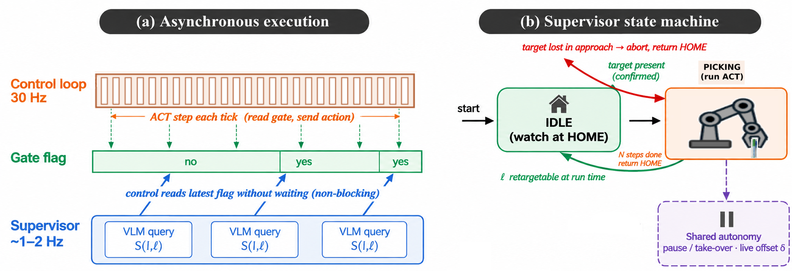
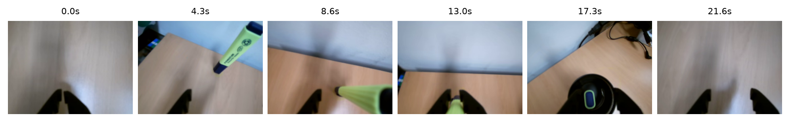
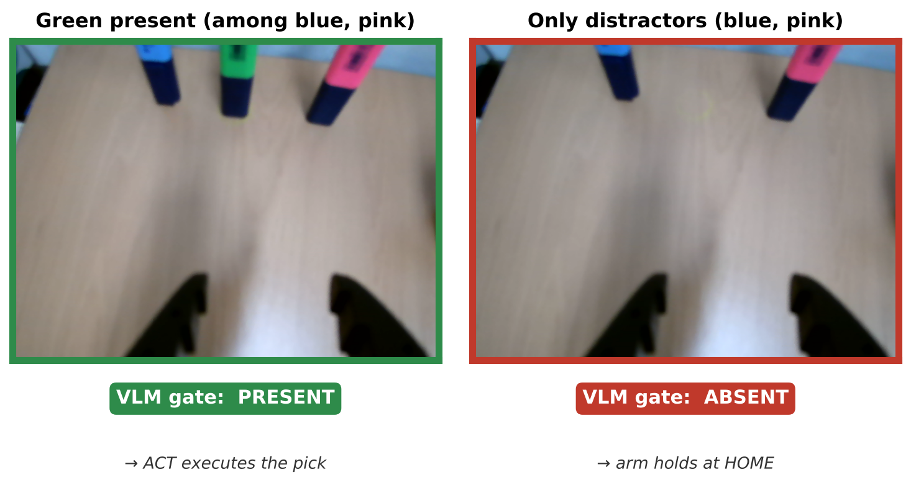

Abstract
A supervisor, not a bigger model
Imitation policies such as the Action Chunking Transformer (ACT) faithfully reproduce a trained skill but carry no notion of which object to act on — a policy trained to pick an object grasps whatever is in front of it. The usual fix is a language-conditioned policy that learns the instruction-to-object mapping from large, annotated datasets, reintroducing the data cost that cheap imitation learning avoids.
We keep the small, cheaply-trained policy fixed and delegate object selection to a vision-language model acting as a high-level supervisor. The two run asynchronously: a 30 Hz control loop executes the policy while a separate thread queries the VLM on shared frames at its own slower rate, so high-latency reasoning never stalls real-time control. The supervisor adds run-time retargeting, a mid-task abort that returns the arm home when the target disappears before grasping, and an optional shared-autonomy mode for human pause/take-over and online correction.
On a low-cost SO-ARM101 with an ACT policy trained from only 20 demonstrations (~6 minutes of teleoperation), the supervised system selects the requested color with no incorrect-color grasps across trials and a held-out detection test, while the unsupervised policy is entirely non-selective. Remaining failures are physical grasp slips, not selection errors — pointing to a practical, data-efficient route to selective, interruptible manipulation on inexpensive hardware.
How it works
Decouple selection from execution
A fixed policy π provides the manipulation skill; a vision-language supervisor S provides selection. Given a run-time target ℓ (e.g. “green marker”), the supervisor emits a binary gate. When the gate is open the policy runs; otherwise the arm holds at a home pose. An optional per-joint offset is the human-control channel, zero in autonomous operation.


The data cost
Six minutes of teleoperation
The entire system is deployed from 20 teleoperated episodes — 10,566 frames at 30 fps, averaging ~17.6 s each. The policy learns only the physical pick-and-place skill; it is never shown object or language labels. All selectivity is supplied later, at run time, by the supervisor — so adding a new target color costs zero new data.


Results
Selection is the easy part — now it’s perfect
Across 50 single-target and 25 three-color trials, the system never grasped the wrong color. Every failure was physical — the upright markers slipped from the gripper in transport or at the moment of grasp — not a selection error. A separate held-out frame test isolates the supervisor and confirms it: perfect precision and recall, including on frames where blue and pink distractors are present but no green.

| Setting | Trials | Success | Transport slip | Grasp slip | Wrong color | Selection acc. |
|---|---|---|---|---|---|---|
| ACT only (baseline) | — | non-selective — grasps any color | — | |||
| Single target | 50 | 27 (54%) | 10 (20%) | 13 (26%) | 0 | — |
| 3-color select | 25 | 13 (52%) | 7 (28%) | 5 (20%) | 0 | 100% |
All failures are physical slips; zero are selection errors. The unsupervised baseline has no way to choose a color.
| Target | Present | Absent | Precision | Recall | F1 | Accuracy |
|---|---|---|---|---|---|---|
| green marker | 25 | 25 | 1.00 | 1.00 | 1.00 | 1.00 |
“Absent” frames contain blue/pink distractor markers but no green, so zero false positives reflects genuine color selectivity, not empty-scene rejection.
Get it
Model, dataset & code
Everything needed to reproduce the system. Links are placeholders — point them at your releases.
Trained ACT policy
The frozen policy from 20 demonstrations, with the LeRobot pre/post-processors. Drop it behind the supervisor to reproduce selective grasping.
Demonstration dataset
20 teleoperated episodes · 10,566 frames @ 30 fps · 640×480 wrist camera + 6-DoF state. LeRobot dataset format.
Code & supervisor
The asynchronous controller, the Cosmos supervisor server, and the GUI with live retargeting, mid-task abort, and shared autonomy.
Paper
Full method, implementation details, configuration, and the complete results and limitations.
Cite
BibTeX
@inproceedings{sanaullah2026vlmsupervised,
title = {Asynchronous Language-Conditioned Object Selection for
Imitation Policies via a VLM Supervisor},
author = {Sanaullah and Kumar, Abhishek and Kim, Jeong Yong and
Abbasi, Saad Jamshed and Han, Byung-Kil and Park, Dong Il},
booktitle = {Preprint},
year = {2026}
}